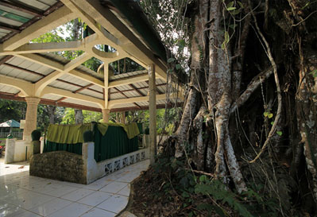
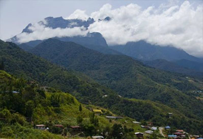
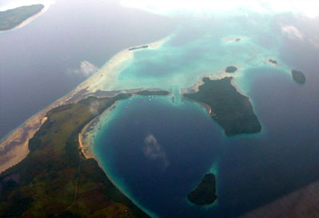

JoloThis bespeak the Americans direct foreign intervention in the internal affairs of the Filipino in the first half of the 20th century.
Provincial Capitol
Joloa capitol which construction is credited to Gov. Murphy Sankula (1968 – 1972) draws the eyes of visitors for its Moorish inspired architectural design.
It is here where we can find the great glasswork Sarimanok of Abdulmari Imao, a renowned Tausug artist

Tomb of Rajah Baguinda
JoloAt Bud Datu or the mountain of Prince lays the tomb of Rajah Baguinda a Muslim prince from Manangkaw, Sumatra, who in the year 1390 brought the wisdom
of the Islam religion in Sulu. Numerous followers of the faith flock to the tomb for local pilgrimage.

Mount Datu
IndananDemand as satellite destination which provides access to the legendary Rajah Baguinda Tomb where tourist/visitors will be excited to see the panoramic views
of Jolo town and Marungas Islands (now Hadji Panglima Tahil Municipalities). Its cool and impressive climate can be a substitute for Tagaytay or Baguio in the North.

Tapaan Island
PandamiThe Island’s feature is comparably similar to Bangas Island. But only in this island can we find abundance of a rare type of a certain seashell locally called “bussu”
(Proudly valued by local residents as their delicacy due to its unique taste).